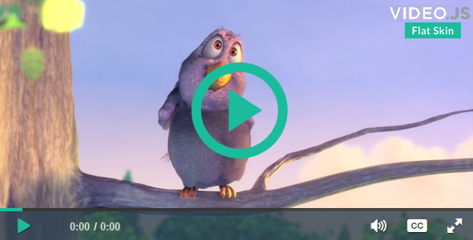

Flat Skin Retina for VideoJS 4
Features
- Video.js that is open source HTML5 & Flash video player, as well as YouTube and Vimeo (through plugins), used on over 100,000 websites
- Skin with Flat Style
- Retina Ready & Fully Responsive
- Unlimited colors - any colour you like
- SVG and LESS files included
- Change color in 10 seconds or less
- 8 Different Demos
- HTML5 & CSS3
- Support and updates
- Wishlist Support
- Well Documented

Include the skin on the page
The base Video.js skin is made using HTML and CSS. That means you can build a custom skin by simply taking advantage of the cascading aspect of CSS and overriding the styles you'd like to change.
<link rel="stylesheet" type="text/css" href="./skins/videojs-flat-skin.min.css>
<script type="text/javascript" src="./video-js/video.js" ></script>
The main class name for all skin-specific styles. To make your own skin,
replace all occurrences of 'vjs-default-skin' with a new name. Then add your new
skin name to your video tag instead of the default skin.
<video class="video-js vjs-flat-skin">
Setting Custom Colors
Once you've chosen a skin to use with your player, it is possible to further customize the skin by setting up to three colors in the LESS configuration:
- @primary-color
- Active skin elements. This includes active and highlighted labels, as well scrubber time that has elapsed.
- @primary-dark-color
- Skin elements that are hover, as well handle time.
- @control-bg-color
- The background portion of the control bar.
Reference
Other Skins
Changelog
- Launch: The launch of the Flat Skin Retina for VideoJS 4 project - 20 September 2015.
Support
If you have any questions that are not answered in this userguide, or any bugs to report, please contact me via email through my CodeCanyon profile. Contacting through CodeCanyon will prove that you purchased the file.
http://codecanyon.net/user/facetheme